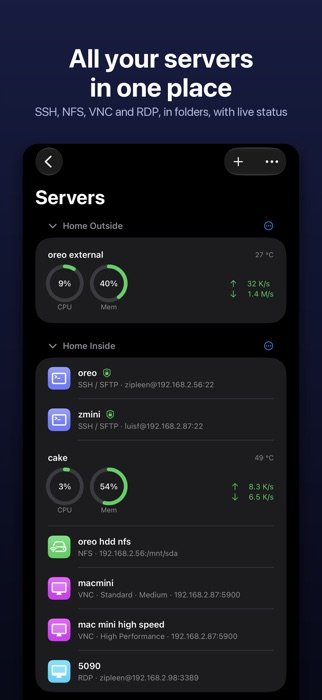
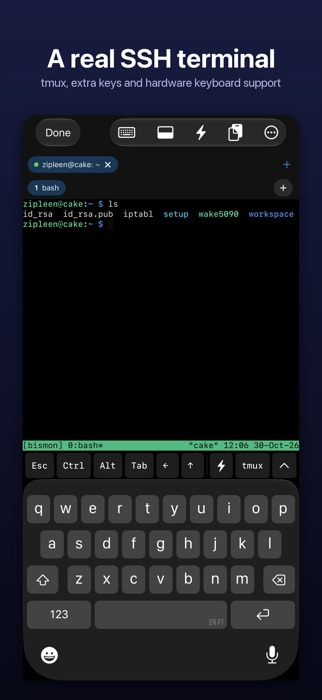
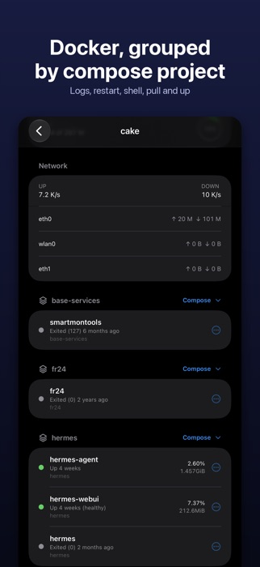
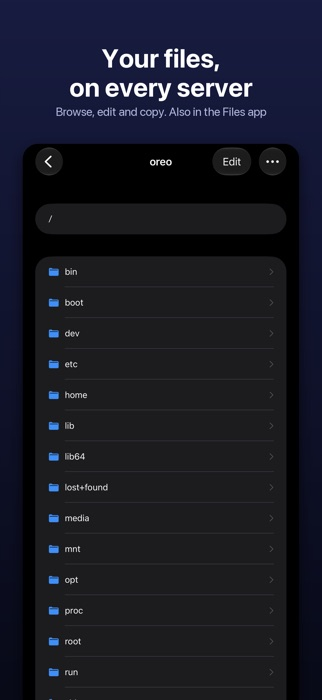
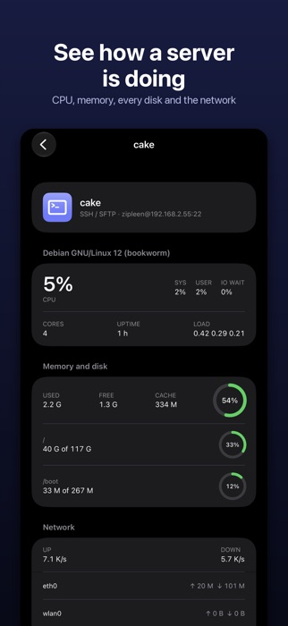
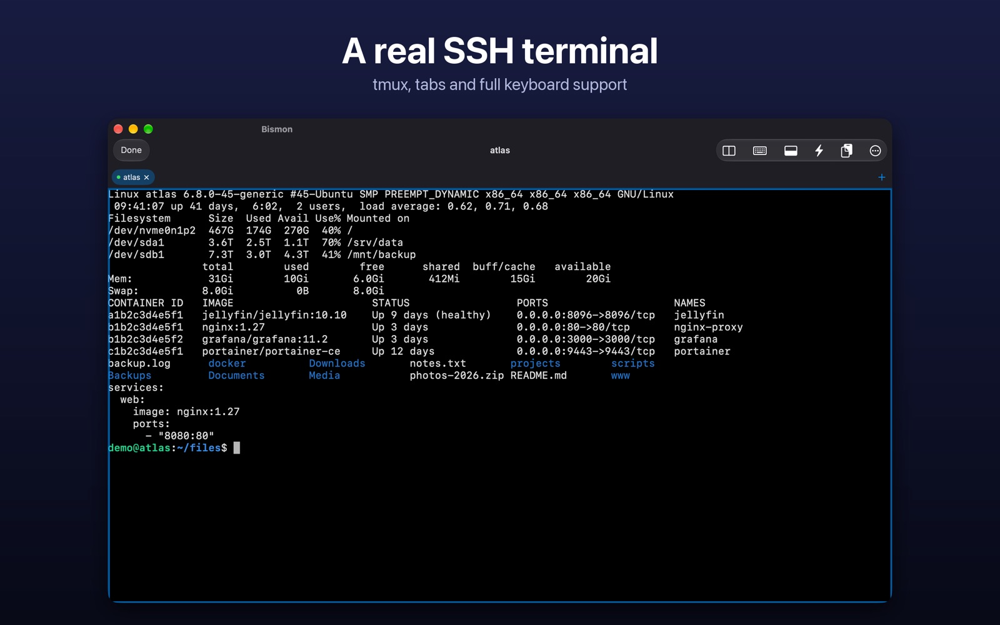
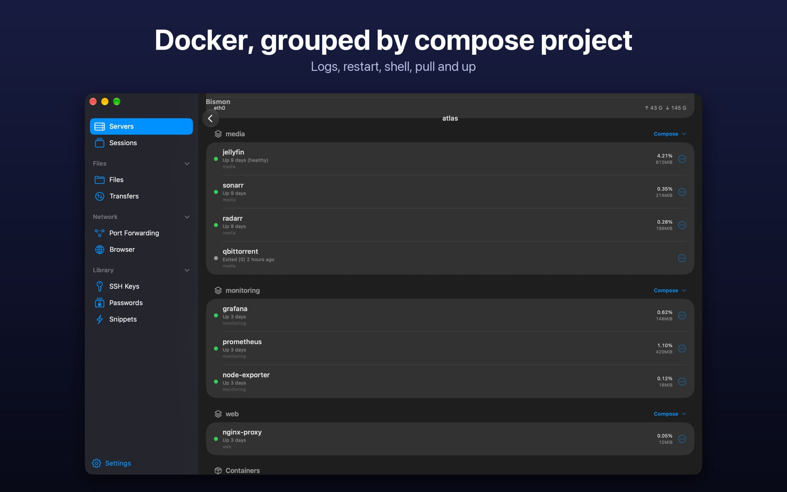

Bismon
Your servers in your pocket. SSH terminals, your server files in the Files app, Docker, port forwarding and remote screens, in one app for iPhone, iPad and Mac.



Your servers in your pocket. SSH terminals, your server files in the Files app, Docker, port forwarding and remote screens, in one app for iPhone, iPad and Mac.



No account, no ads, no tracking. Your servers, passwords and keys stay on your devices.
Tabs, keep-alive and automatic reconnect. tmux windows as tabs. Configurable extra keys, snippets and a password vault. Split view on iPad and Mac.
Your SFTP, WebDAV, SMB and NFS servers as drives in the Files app. Upload, rename, keep files offline, copy between servers.
Containers grouped by compose project with logs, shells and actions. Compose pull, up and upgrade. Proxmox VMs and containers.
Cards with CPU, memory and network. Load, uptime, every disk, and network per interface. Widget for Home and Lock Screen.
Run inside the app. No VPN profile. Choose a route per server, VNC or RDP computer.
Local forwards through SSH with automatic reconnect and live status per rule.
VNC (Screen Sharing) and Remote Desktop (RDP) with touch gestures and a trackpad mode.
Generate Ed25519 keys or import OpenSSH keys. Install a key like ssh-copy-id and manage authorized_keys.
Browse through a SOCKS or HTTP proxy, an SSH tunnel, or your Tailscale or WireGuard network.


The same app on a bigger screen, with windows, shortcuts and a hardware keyboard.


No account, no ads, no tracking. iCloud sync is optional and uses iCloud Keychain. Host keys are pinned on first use, and you are warned if one changes.
Bismon does not have a public issue tracker. Write to me and I will answer.
info@tvhclient.com